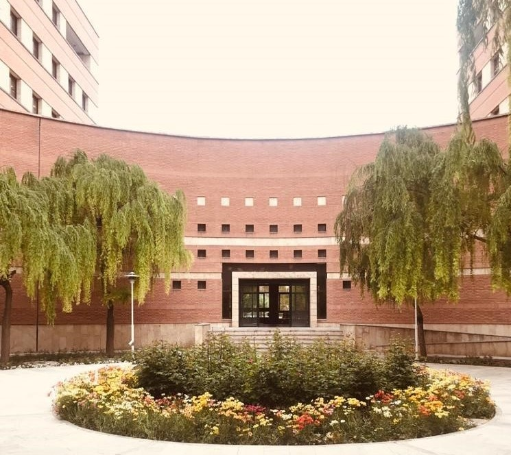

AI is here, let's welcome it! I will have a workshop session related to optimising ChatGPT and Codex in the work environment. More details are coming.
Hi there. This is Maryam Hashemi’s personal page.
I’m an AI scientist based in Sydney. Currently, I work as a Data Scientist at the City Futures Research Centre, where I analyse large-scale datasets related to urban development in Australia and apply large language models (LLMs) and machine learning techniques to extract insights.
My expertise lies in Artificial Intelligence (AI), Machine Learning (ML), and the development of intelligent systems. I am particularly passionate about transparent and trustworthy AI, leveraging AI for social good, and solving real-world problems.
The best way to reach me is by email, which you can find in the left-side menu. To stay updated with my latest work and activities, please visit the News section below.
Thesis Title: Designing an Android application to have an Intelligent Greenhouse.
Description: Control of vital plant conditions through Internet of Things technologies and an Android application.
Thesis Title: Deep learning-based Driver Distraction and Drowsiness Detection.
Description: Analysis of drivers' faces to detect risky situations such as sleeping by designing deep neural networks for real-time tasks.

Thesis Title: Toward a transparent world: axiomatic explainable artificial intelligence.
Description: Developing algorithms that can generate automated justification and reasoning for AI systems based on axioms.
AI is here, let's welcome it! I will have a workshop session related to optimising ChatGPT and Codex in the work environment. More details are coming.
I presented our work, From Axioms to Transparency: A User-Centric Axiomatic Approach for Explainable AI in Participatory Budgeting, at the International Conference on AI and Emerging Technology for Sustainable Future (ICAISF 2026) in Italy.
I am starting a new role as a Data Scientist at the City Futures Research Centre, where I apply large language models (LLMs) and machine learning techniques to improve development application processes in the urban construction sector.
I recently concluded my time at QUT to transition into a new role. It was a rewarding experience to work with an outstanding team at QUT and RACQ, where I developed and applied my expertise in fuel market modelling and economic modelling to improve predictive outcomes.